| Preview | JSON | Nombre final | Archivo origen | Método |
|---|
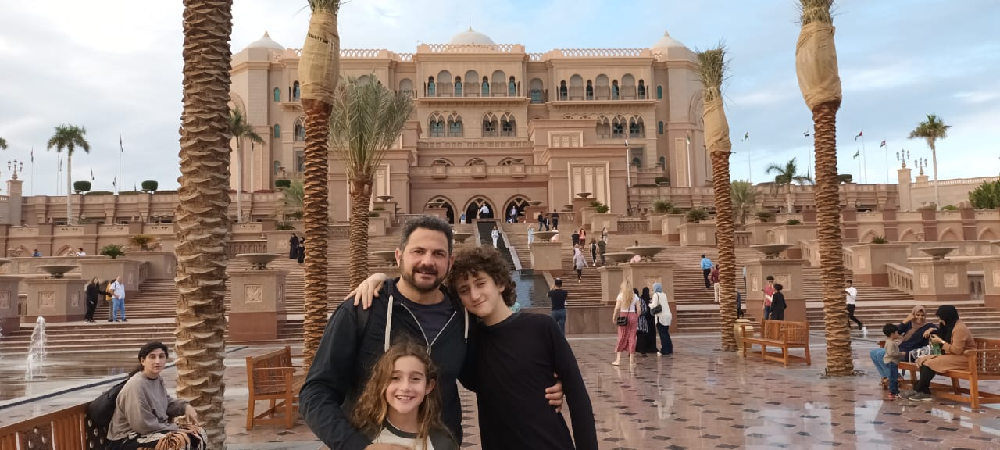 | abudhabi-rectangle-2.json | abudhabi-rectangle-2.png | Rectangle-22.png (727x814, 857840 B) | Proximidad de peso (dif: 23.0%) |
 | abudhabi-rectangle.json | abudhabi-rectangle.png | Rectangle-23.png (661x722, 759713 B) | Proximidad de peso (dif: 36.6%) |
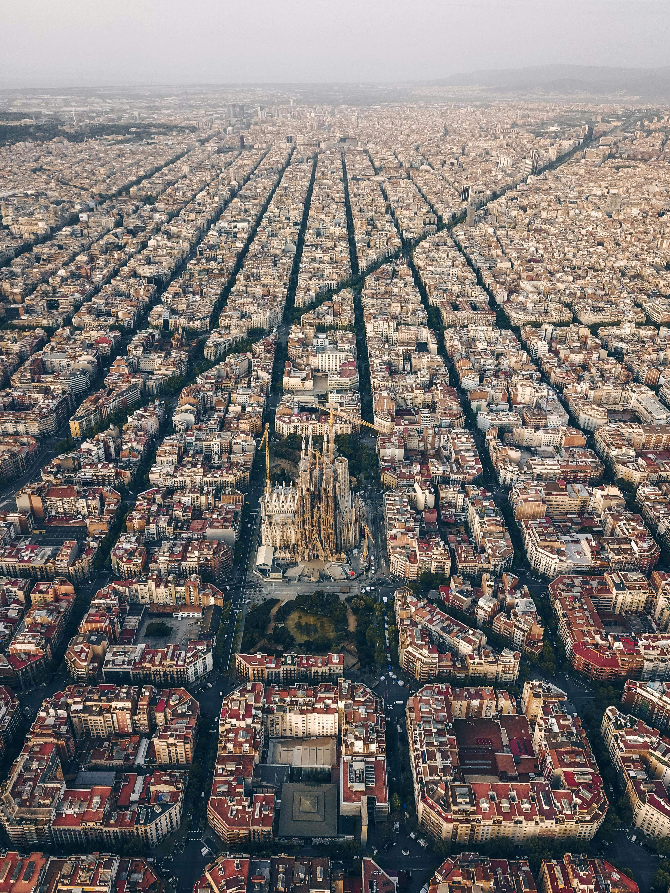 | barcelona-image-38.json | barcelona-image-38.png | Rectangle-38.png (504x532, 550202 B) | Proximidad de peso (dif: 0.6%) |
 | barcelona-image-39.json | barcelona-image-39.png | Rectangle-20.png (596x719, 445712 B) | Proximidad de peso (dif: 8.4%) |
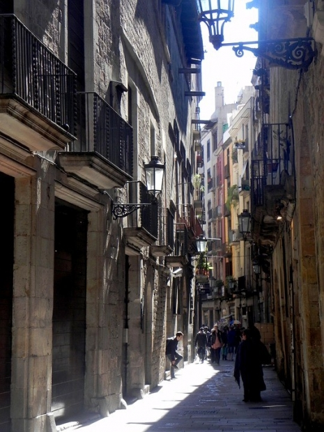 | barcelona-image-41.json | barcelona-image-41.png | image 45-2.png (617x460, 421472 B) | Proximidad de peso (dif: 6.8%) |
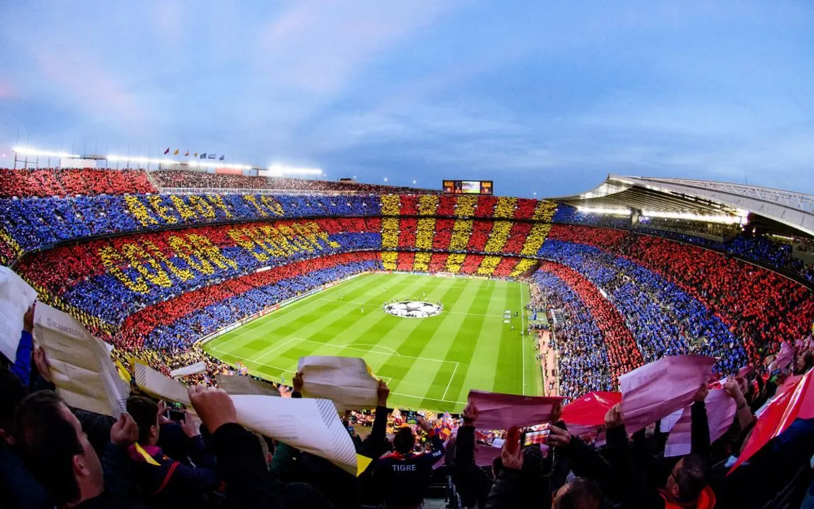 | barcelona-image-42.json | barcelona-image-42.png | Rectangle-19.png (434x447, 405866 B) | Proximidad de peso (dif: 2.5%) |
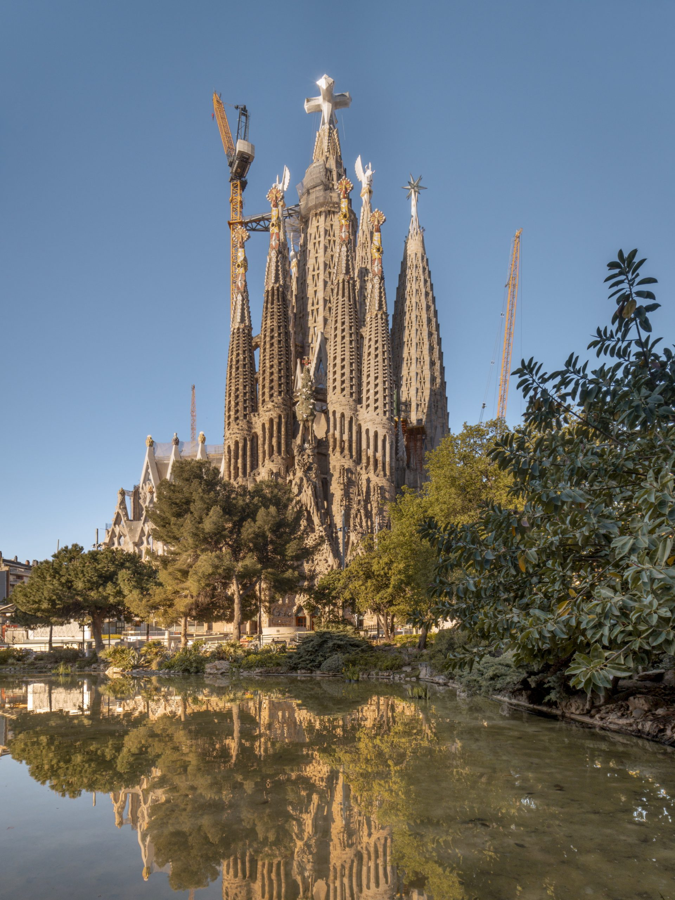 | barcelona-image-43.json | barcelona-image-43.png | Rectangle-18.png (587x648, 537647 B) | Proximidad de peso (dif: 8.0%) |
 | bariloche-image-28.json | bariloche-image-28.png | Rectangle-37.png (580x708, 751303 B) | Proximidad de peso (dif: 1.3%) |
 | bariloche-rectangle-2.json | bariloche-rectangle-2.png | Rectangle-21.png (502x502, 384345 B) | Proximidad de peso (dif: 48.6%) |
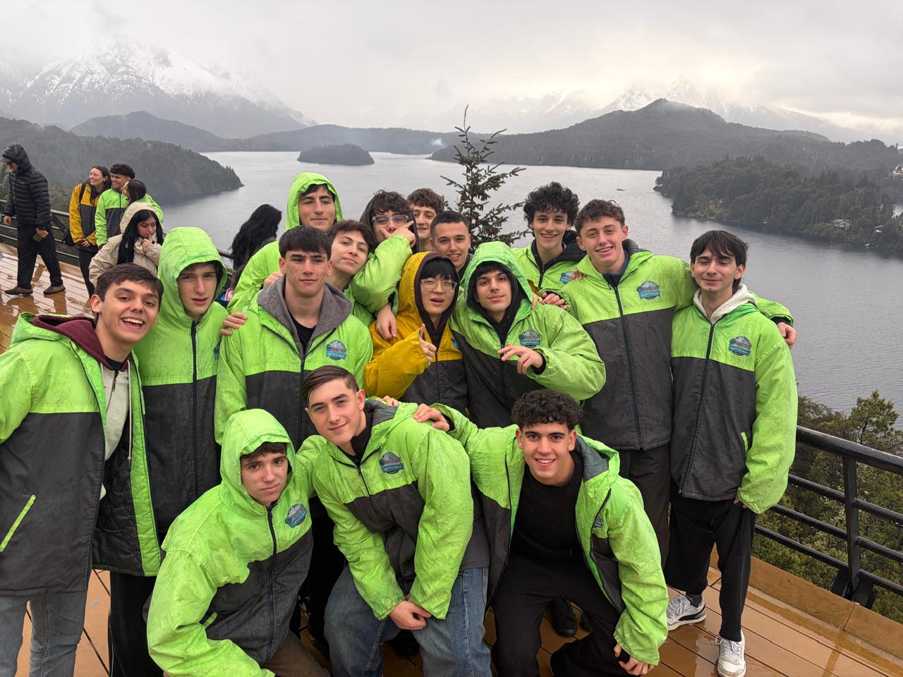 | bariloche-rectangle-3.json | bariloche-rectangle-3.png | Rectangle-2.png (347x531, 377267 B) | Proximidad de peso (dif: 59.0%) |
 | bariloche-rectangle.json | bariloche-rectangle.png | Rectangle-34.png (458x373, 360198 B) | Proximidad de peso (dif: 68.2%) |
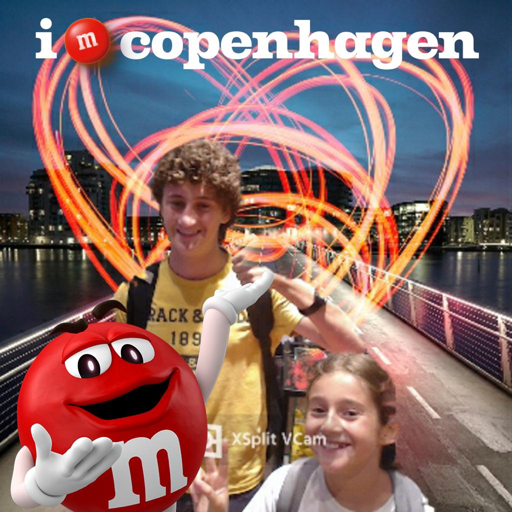 | copenhagen-rectangle-2.json | copenhagen-rectangle-2.png | Rectangle-1.png (528x376, 355704 B) | Proximidad de peso (dif: 69.9%) |
 | copenhagen-rectangle.json | copenhagen-rectangle.png | Rectangle-28.png (335x436, 320039 B) | Proximidad de peso (dif: 75.8%) |
 | inicio-rectangle-2.json | inicio-rectangle-2.png | Rectangle-36.png (451x326, 300970 B) | Proximidad de peso (dif: 62.7%) |
 | inicio-rectangle-3.json | inicio-rectangle-3.png | Rectangle-24.png (448x439, 299736 B) | Proximidad de peso (dif: 32.8%) |
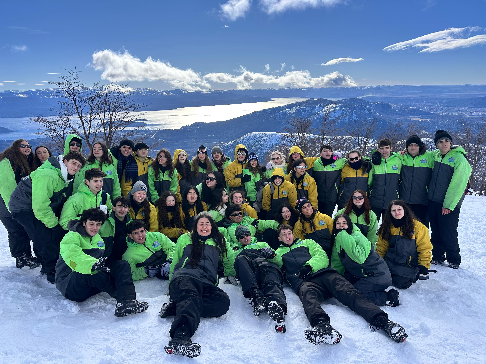 | inicio-rectangle-4.json | inicio-rectangle-4.png | Rectangle-6.png (447x572, 299010 B) | Proximidad de peso (dif: 54.9%) |
 | inicio-rectangle.json | inicio-rectangle.png | Rectangle-7.png (361x457, 290215 B) | Proximidad de peso (dif: 65.4%) |
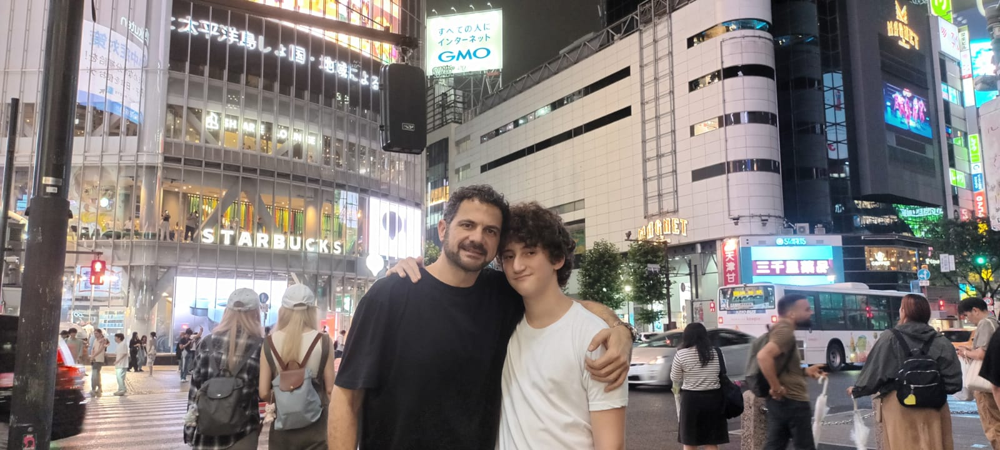 | japon-rectangle-2.json | japon-rectangle-2.png | Rectangle-4.png (380x288, 256530 B) | Proximidad de peso (dif: 74.8%) |
 | japon-rectangle-3.json | japon-rectangle-3.png | image 29.png (321x411, 255864 B) | Proximidad de peso (dif: 77.3%) |
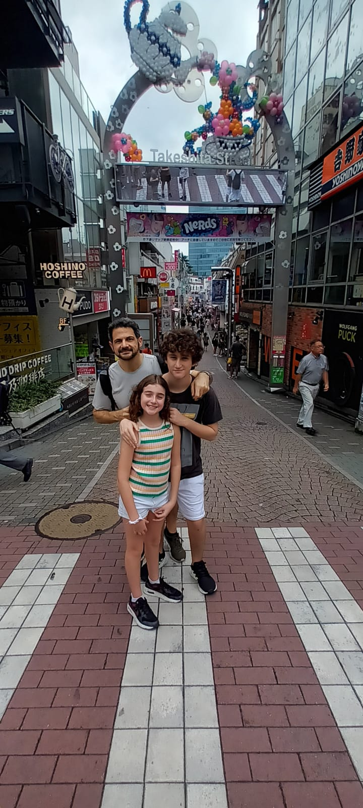 | japon-rectangle-4.json | japon-rectangle-4.png | Rectangle-25.png (321x425, 255377 B) | Proximidad de peso (dif: 65.2%) |
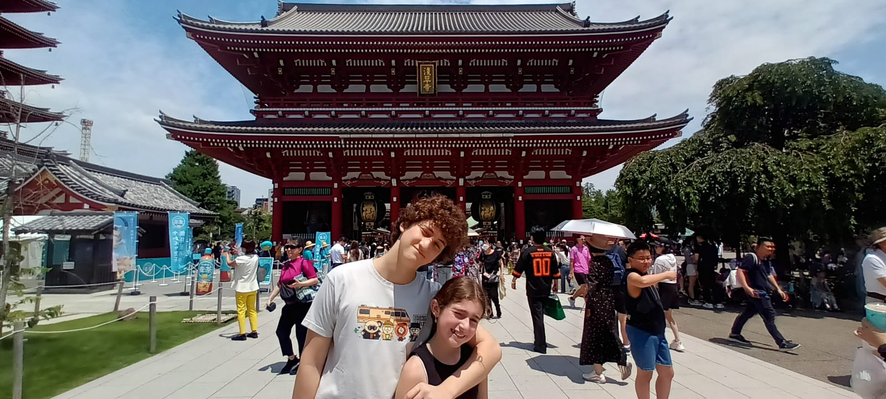 | japon-rectangle-5.json | japon-rectangle-5.png | Rectangle-35.png (403x370, 252191 B) | Proximidad de peso (dif: 66.8%) |
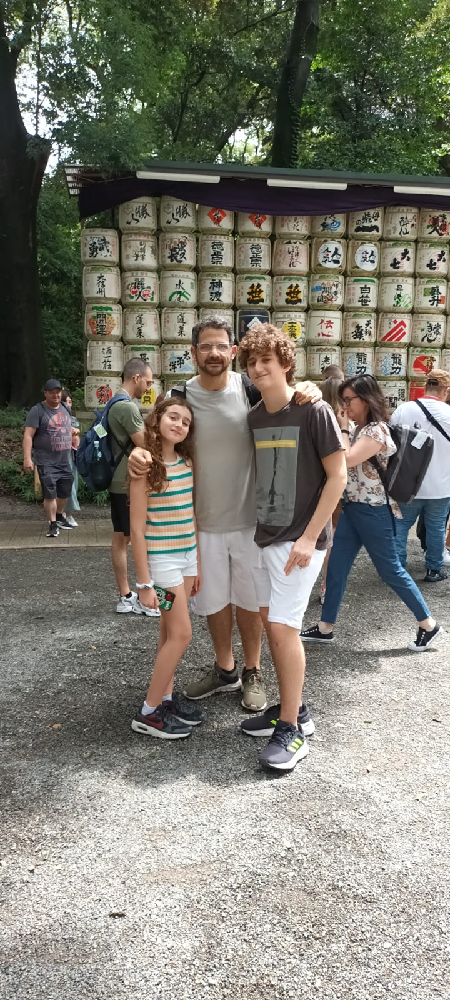 | japon-rectangle-6.json | japon-rectangle-6.png | Rectangle-3.png (244x504, 244747 B) | Proximidad de peso (dif: 42.5%) |
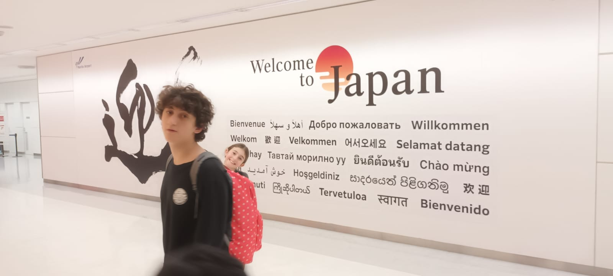 | japon-rectangle.json | japon-rectangle.png | Rectangle-33.png (337x352, 217057 B) | Proximidad de peso (dif: 46.6%) |
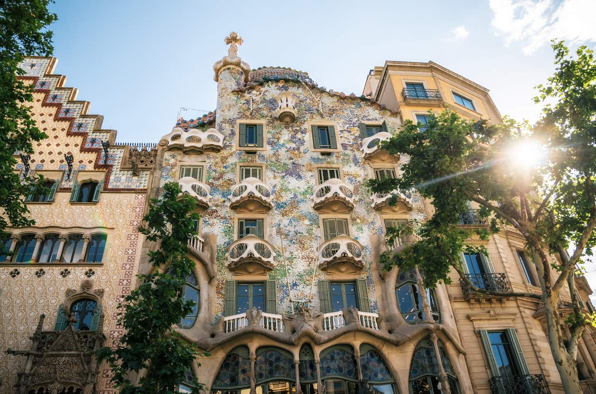 | mapa-image-44-2.json | mapa-image-44-2.png | Rectangle-32.png (277x254, 170490 B) | Proximidad de peso (dif: 0.1%) |
 | mapa-image-44-3.json | mapa-image-44-3.png | Rectangle-27.png (349x257, 192080 B) | Proximidad de peso (dif: 1.9%) |
 | mapa-image-44.json | mapa-image-44.png | Rectangle-26.png (378x269, 208877 B) | Proximidad de peso (dif: 21.7%) |
 | mapa-rectangle-2.json | mapa-rectangle-2.png | Rectangle-9.png (376x239, 205264 B) | Proximidad de peso (dif: 45.3%) |
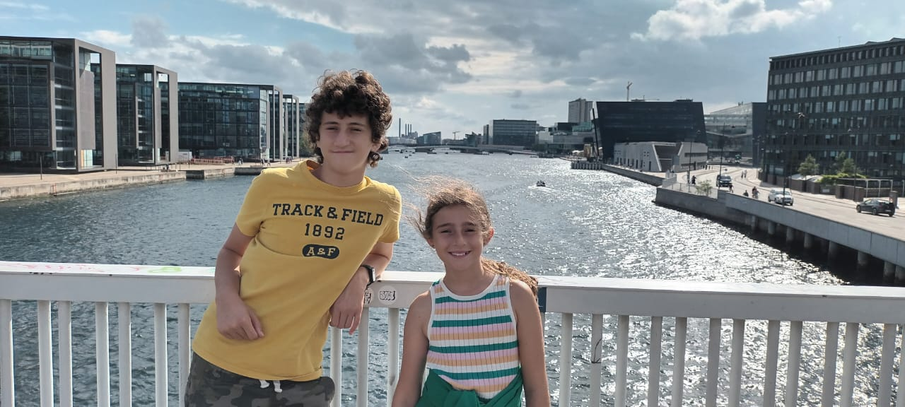 | mapa-rectangle-3.json | mapa-rectangle-3.png | Rectangle-29.png (303x359, 184391 B) | Proximidad de peso (dif: 42.0%) |
 | mapa-rectangle-4.json | mapa-rectangle-4.png | Rectangle-31.png (298x240, 176981 B) | Proximidad de peso (dif: 19.8%) |
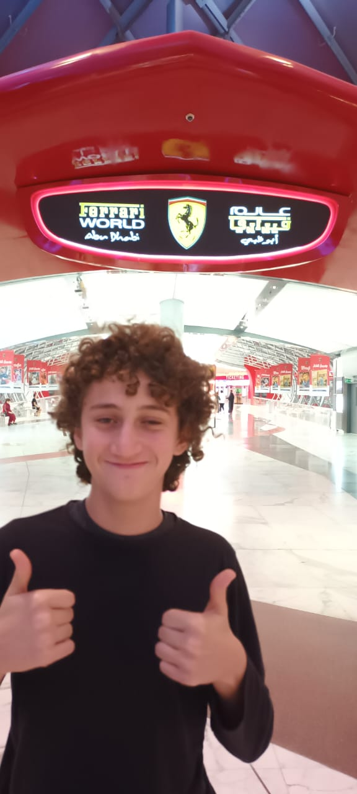 | mapa-rectangle-5.json | mapa-rectangle-5.png | image 44.png (208x274, 158559 B) | Proximidad de peso (dif: 6.1%) |
 | mapa-rectangle-6.json | mapa-rectangle-6.png | image 47-1.png (226x299, 146249 B) | Proximidad de peso (dif: 0.8%) |
 | mapa-rectangle-7.json | mapa-rectangle-7.png | image 46-1.png (271x280, 157850 B) | Proximidad de peso (dif: 0.0%) |
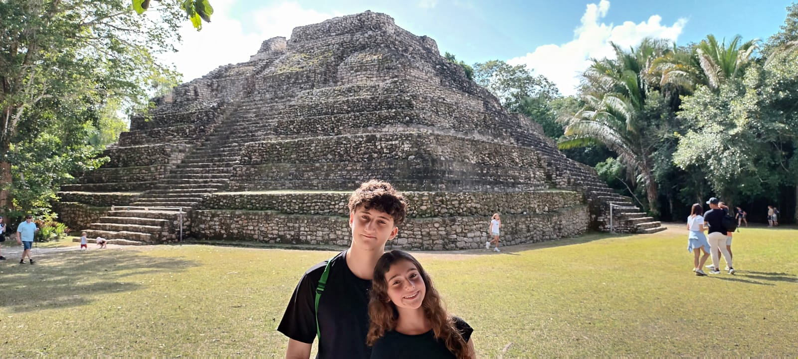 | mapa-rectangle-8.json | mapa-rectangle-8.png | Rectangle.png (404x424, 157666 B) | Proximidad de peso (dif: 18.1%) |
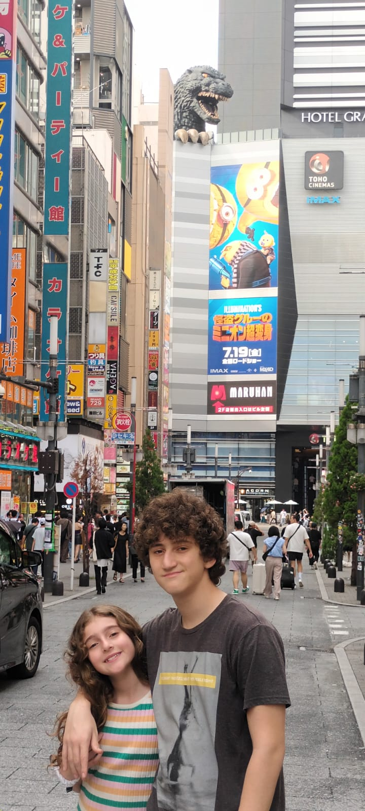 | mapa-rectangle.json | mapa-rectangle.png | Rectangle-8.png (341x227, 153380 B) | Proximidad de peso (dif: 63.7%) |
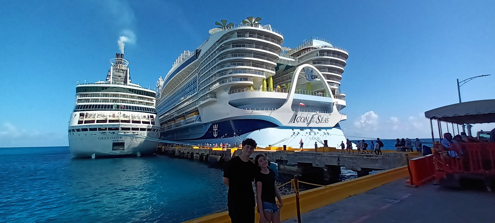 | marabierto-image-44.json | marabierto-image-44.png | image 45-1.png (298x200, 152009 B) | Proximidad de peso (dif: 87.6%) |
 | marabierto-rectangle-2.json | marabierto-rectangle-2.png | Rectangle-30.png (282x239, 150817 B) | Proximidad de peso (dif: 90.8%) |
 | marabierto-rectangle.json | marabierto-rectangle.png | Rectangle-5.png (291x225, 141977 B) | Proximidad de peso (dif: 93.5%) |
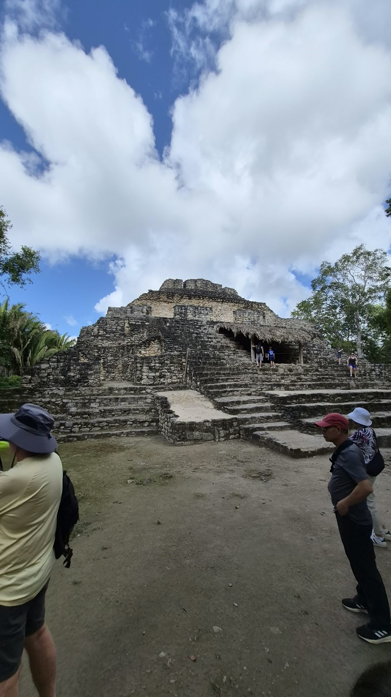 | mexico-rectangle-2.json | mexico-rectangle-2.png | Rectangle-10.png (223x261, 136443 B) | Proximidad de peso (dif: 85.1%) |
 | mexico-rectangle.json | mexico-rectangle.png | image 48.png (291x185, 126646 B) | Proximidad de peso (dif: 94.1%) |
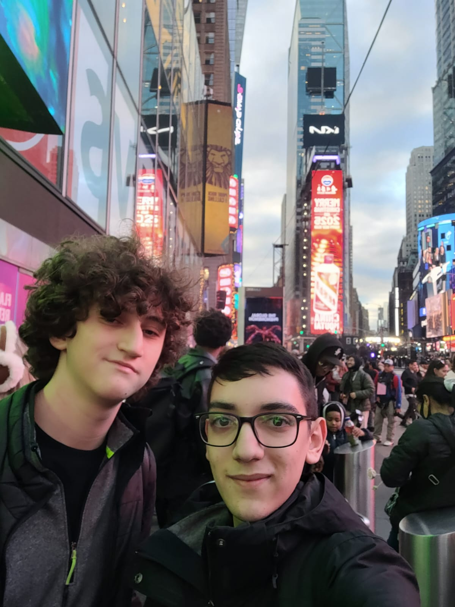 | newyork-rectangle.json | newyork-rectangle.png | Rectangle-11.png (202x263, 124293 B) | Proximidad de peso (dif: 94.6%) |
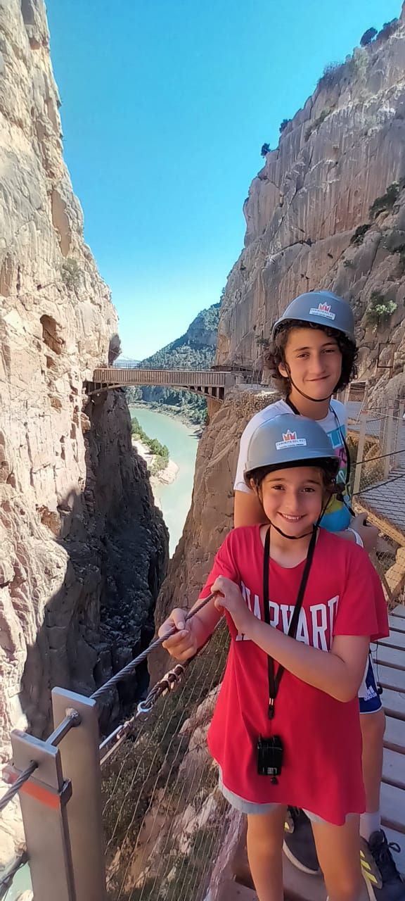 | otrosrumbos-rectangle-2.json | otrosrumbos-rectangle-2.png | Rectangle-12.png (279x184, 106740 B) | Proximidad de peso (dif: 83.0%) |
 | otrosrumbos-rectangle-3.json | otrosrumbos-rectangle-3.png | image 41.png (285x165, 82551 B) | Proximidad de peso (dif: 86.0%) |
 | otrosrumbos-rectangle-4.json | otrosrumbos-rectangle-4.png | image 45.png (147x191, 75757 B) | Proximidad de peso (dif: 92.4%) |
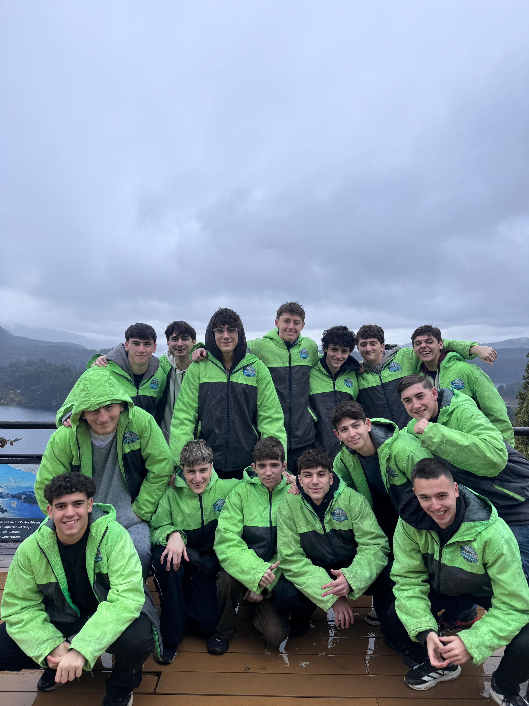 | otrosrumbos-rectangle-5.json | otrosrumbos-rectangle-5.png | Rectangle-13.png (209x122, 69250 B) | Proximidad de peso (dif: 87.4%) |
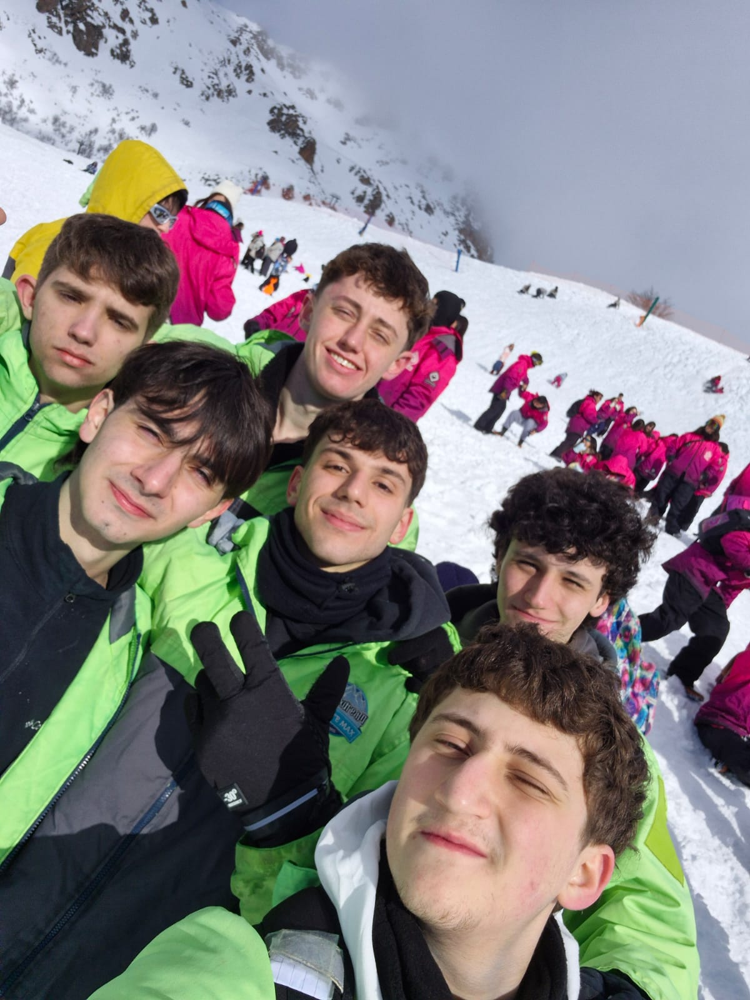 | otrosrumbos-rectangle-6.json | otrosrumbos-rectangle-6.png | Rectangle-17.png (146x170, 61815 B) | Proximidad de peso (dif: 86.3%) |
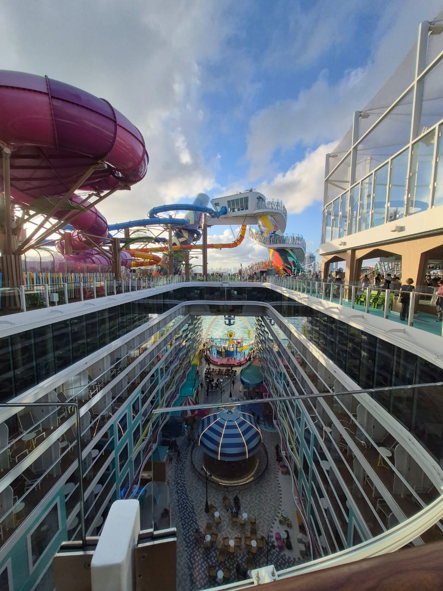 | otrosrumbos-rectangle-7.json | otrosrumbos-rectangle-7.png | Rectangle-14.png (165x198, 59157 B) | Proximidad de peso (dif: 89.0%) |
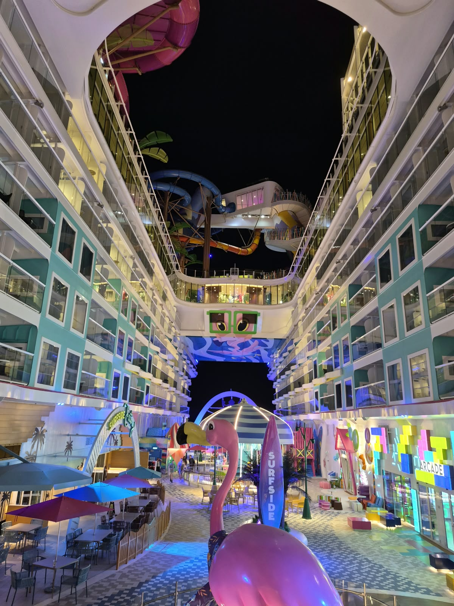 | otrosrumbos-rectangle-8.json | otrosrumbos-rectangle-8.png | image 47.png (162x164, 57887 B) | Proximidad de peso (dif: 89.0%) |
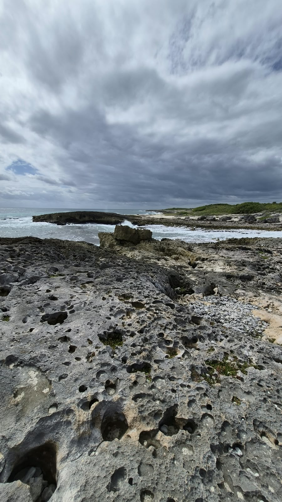 | otrosrumbos-rectangle-9.json | otrosrumbos-rectangle-9.png | image 46.png (167x114, 51958 B) | Proximidad de peso (dif: 92.1%) |
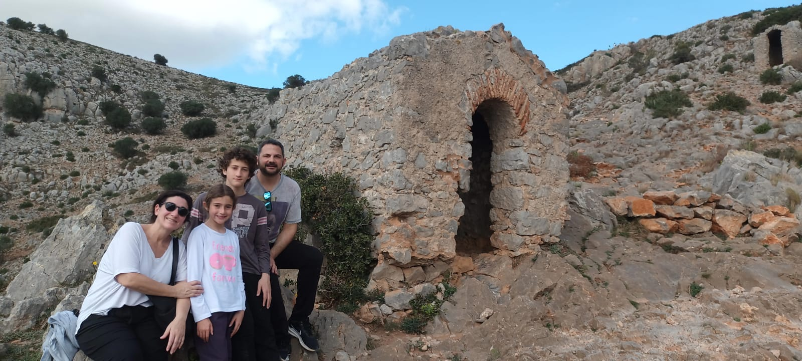 | otrosrumbos-rectangle.json | otrosrumbos-rectangle.png | Rectangle-16.png (138x157, 51738 B) | Proximidad de peso (dif: 93.3%) |